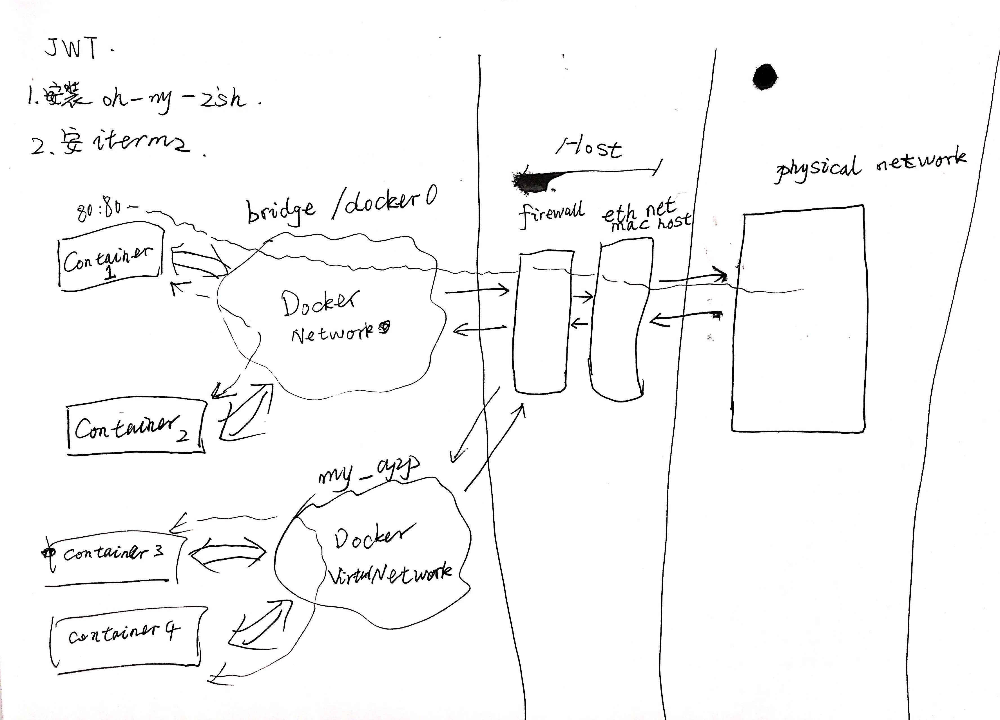

Docker Networking 基础
本文主要介绍 Docker 的网络基础, 包括:
docker container run -p命令docker container port命令查看容器的端口- Docker Networking 的概念
- 网络包如何在 Docker 内部流转
Docker 的默认 Networking
当启动容器时, 实际是将容器自动连接到了 Docker 的一个特殊网络中. 默认情况下, 这个网络是一个 Bridge 网络. 而这样的网络可以在 Docker 中存在很多个, 这些网络被路由通过 Host 上的 NAT 防火墙.
如果是在 Docker 内部网络中通信的话, 容器就可以不将自己的端口暴露出去, 只要是在同一个网络下, 容器间可以直接通信.
比如一个网络 my_app 中存在 mysql 和 php 容器, 它们可以相互通信, 另外一个网络 my_api 中存在 mongo 和 nodejs 容器, 这两个容器也可以在 my_api 网络下正常通信. 但如果是两个不同网络下的容器, 则无法直接通信.
Docker 中的网络可以灵活进行配置:
- 默认网络可以被很方便地替换或配置
- 可以创建多个虚拟网络, 就像上面的 my_app 和 my_api 网络那样, 每个网络可以配置自己的安全规则等
- 可以让一个容器连接到多个虚拟网络, 这样就解决了跨虚拟网络通信的问题. 也可以让容器不连接任何网络.
- 可以让容器直接连接到 Host 而不使用虚拟网络, 使用 Host 的 IP:
--net=host. - 可以使用不同的 Docker 网络驱动来获取更多的网络能力. 网络驱动是可插拔的.
通过 CLI 进行网络配置
启动 nginx 容器: docker container run -p 80:80 --name n1 -d nginx, 然后演练一些 CLI 命令.
查看容器的端口配置:
docker container port n1, 输出如下:80/tcp -> 0.0.0.0:80格式是 hostIP/协议名称 -> container监听 IP:端口
查看容器的 IP 地址:
docker container inspect --format 样式字符串 容器名样式字符串可以是双重大括号括起来的比如
.NetworkSettings.IPAddress的字符串.输出如下:
172.17.0.3这个 IP 即容器在默认虚拟网络下的 IP 地址.
列出所有的虚拟网络:
docker network ls:NETWORK ID NAME DRIVER SCOPE 6dd4c3f4dabd bridge bridge local 9565b813a90a host host local a1606d06a4af none null local其中
bridge为默认网络, 它桥接过 NAT 防火墙然后到达连接的外部物理网络.连接到
host的容器会直接跳过 Docker 的虚拟网络, 直接连接到 Host 的网络接口上.none网络就是提供给那些不连接到任何网络的容器使用的.查看网络信息:
docker network inspect包含许多信息, 其中的
Containers字段中包含的就是所有连接到这个网络的容器信息.创建 docker 网络:
docker network create --driver比如创建 my_app_net:
docker network create my_app_net, 如果不指定--driver参数, 则默认使用bridge.将容器连接到某网络:
docker network connect比如将某个容器连接到创建的
my_app_net网络, 就可以使用:docker network connect 网络名 容器名将容器从某网络端口:
docker network disconnect可以使用:
docker network disconnect 网络名 容器名
附 一张手绘网络图形

整体的网络情况就和图中类似.